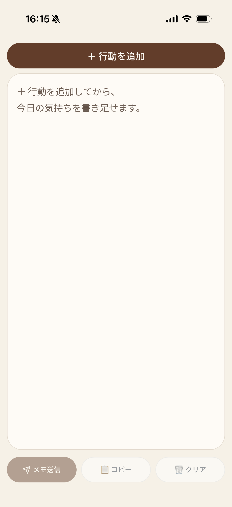
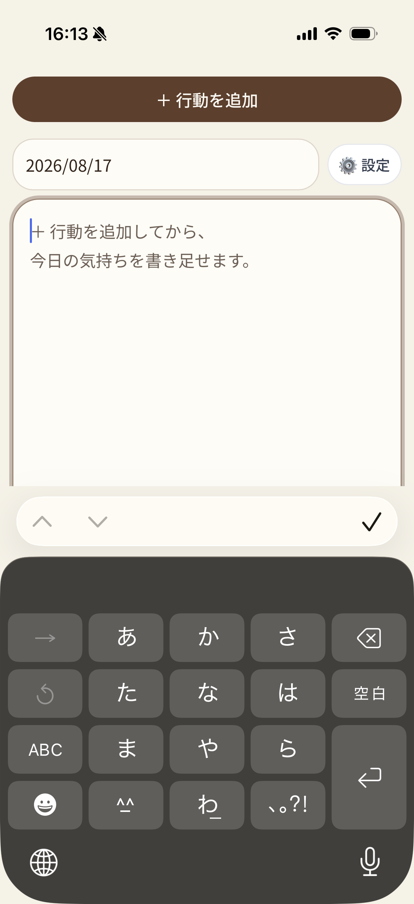
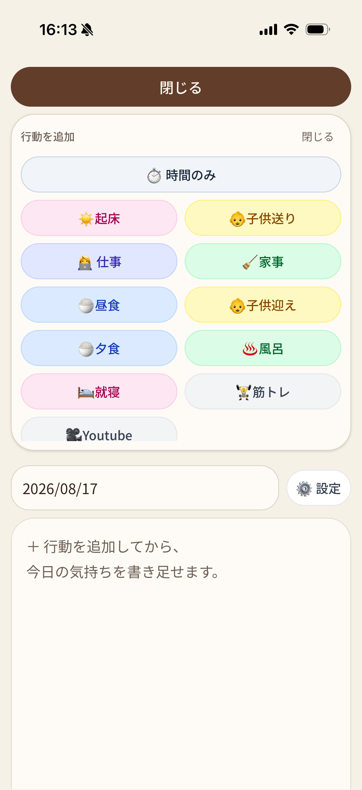
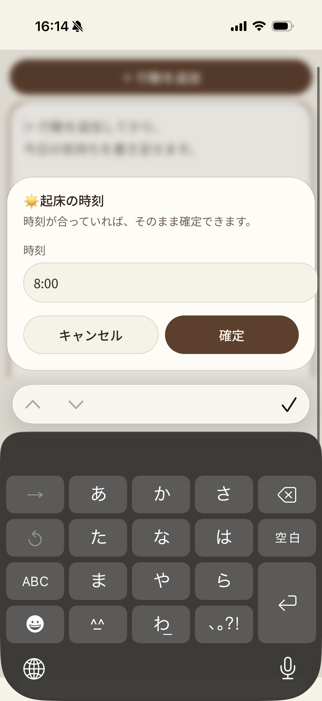

作ったもの
ワンタップで日々の行動を記録できる自分専用アプリ「らくらく日記メーカー」。

画面 1
app-screenshot-1.png

画面 2
app-screenshot-2.png

画面 3
app-screenshot-3.png

画面 4
app-screenshot-4.png
ワンタップで日々の行動を記録できる自分専用アプリ「らくらく日記メーカー」。
日々のルーチン（起床、家事など）をスマホで手入力する手間や、画面スクロールの煩わしさ。また、入力中にうっかり画面を閉じてデータが消えてしまう絶望感。
1年以上日記を続ける中で、ルーチンの記録だけで疲弊してしまい、本当に書きたかった「感情」や「思考」を書く余裕が失われていたため。記録の負荷を極限まで下げて、自分の心と向き合う「心の余白」を生み出したかった。
工夫した点
スマホでの片手操作に特化し、スクロール不要の1画面完結レイアウトと、下からせり上がるボトムシートUIを採用。また、localStorageによる自動保存機能を実装し、「絶対に消えない」安心感を実現した。
苦戦した点
行動追加メニューの表示位置のUI調整。頭で考えたUIと実際の使い勝手が異なり苦戦したが、自作だからこそ即座に軌道修正を行い、最も直感的な形にたどり着くことができた。